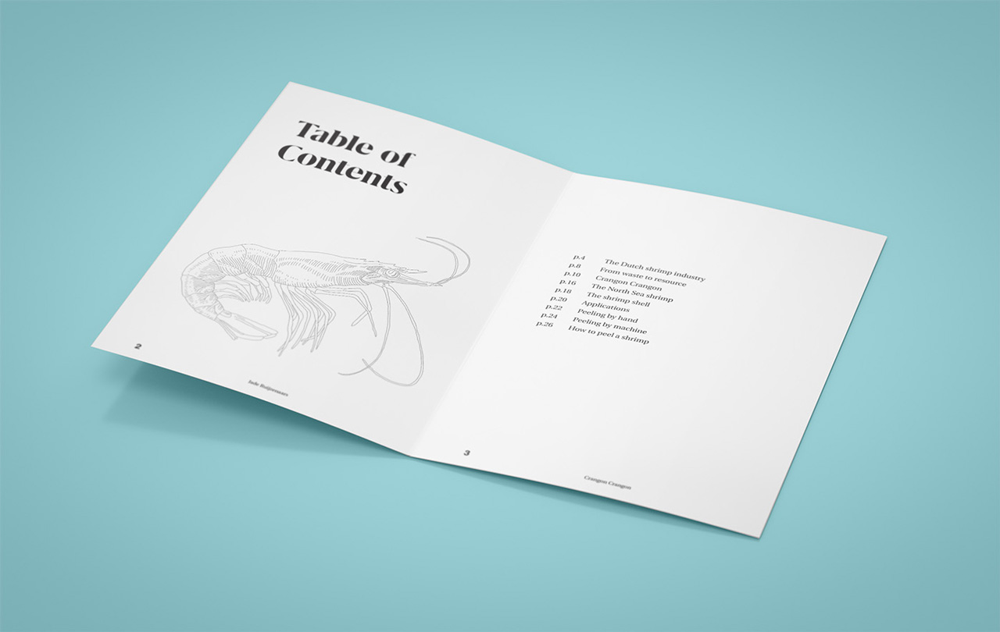
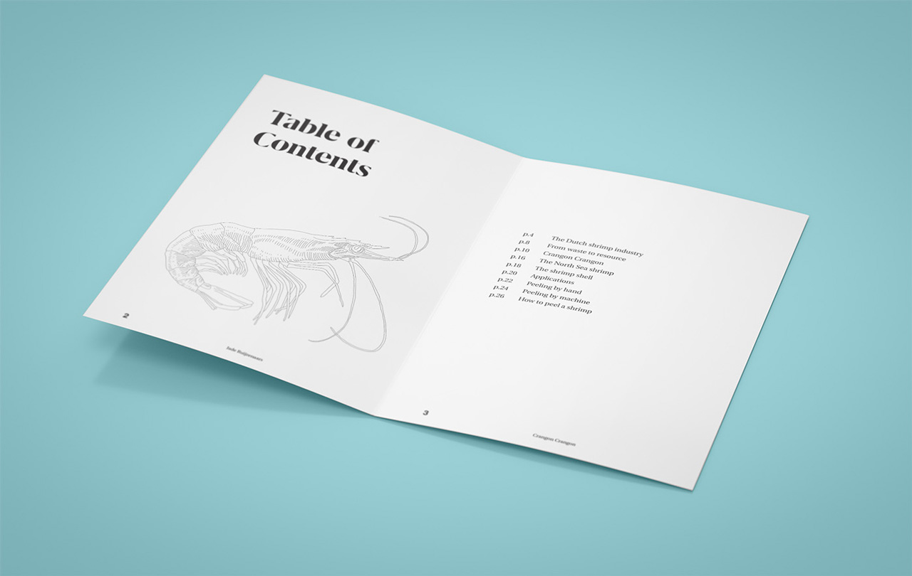

Crangon Crangon
Shrimp: shrimp, noun. ‘crustacean (Crangon crangon)’
North Sea shrimp, Common Shrimp, Brown Shrimp ‘Crangon crangon’
The Dutch shrimp industry
I became fascinated by the potential of discarded shrimp shells after reading an article on the website Vice Munchies about Meat the Mushroom, a group of Amsterdam scientists. In response to the huge amount of waste produced by the shrimp industry, Meat the Mushroom were experimenting with making cheese from discarded shrimp shells, using a fungus as a catalyst for the fermentation process. Previously I knew nothing about the Dutch shrimp industry and the North Sea shrimp (scientific name: Crangon crangon), but this article explained how the industry works, and also pointed toward other potential uses of the discarded shells.
As we all know, the fresher the fish, the better the taste. However, shrimp sold in the Netherlands is not as fresh as we might think. Although most of the shrimp sold here is fished off the Dutch coast, it is then transported to Morocco (where labour costs are much lower) to be peeled by hand. After that, it is shipped back to Europe for consumption.
Shrimp peeling is very labour-intensive, which has a significant impact on the price. North Sea shrimp is more expensive than most other species, since each individual shrimp is so small. In the past, the shrimp was peeled by home workers. Often this was a job for women and children in small fishing villages. After 1990, home peeling was banned due to new hygiene regulations, and production moved to lower-wage countries such as Morocco and Poland.
Dutch distributors have always played a prominent role in operating these factories, and currently own six of the seven peeling stations in Tangier, Morocco. Shrimp peeled in Morocco is available for consumption only two weeks to two months after it has been caught. Though this reduces expenses, the downside is that the shrimp is less fresh, with more preservatives added to extend shelf life.
However, a new approach has recently been introduced: in July 2016, the shrimp distribution firm Telson, together with the shrimp peeling centre GPC Kant, opened a new mechanical peeling factory in the northern Dutch province of Groningen. It took 20 years to develop a fully functional machine, so this is quite a revolutionary step for the industry. As a result, the percentage of Dutch shrimp peeled in the Netherlands has increased from 4% to 20% – approximately 100,000 kilogrammes per week.
Besides boosting production, this new process also contributes to establishing a sustainable, local and transparent food chain.
Advantages of mechanical peeling:
- Significantly less manpower required
- Close to source – shorter time to market
- Very little preservatives added
- Peeling at very low temperatures
- Ensures a natural, slightly sweet taste
However, the problem of waste remains. A shrimp consists for 60% to 70% of its shell, which is not suitable for consumption. And with the increased capacity for shrimp shelling, the amount of waste has also increased: currently some 60,000 kilos per week, roughly the equivalent of three big trucks.
-
Alberding, Felicia. ‘In Amsterdam-Noord maken ze schimmelkaas van garnalen resten.’ In: Munchies Vice, December 11, 2014.
From waste to resource
Shrimp shells are a valuable resource. They contain chitin, which is a polymer also found in insects and lobsters. Chitin is one of the most common organic materials in the world. Chitosan can be extracted from chitin. Both of these compounds have numerous potential applications. They can be used in cosmetics, medicine, packaging, bioplastics, agriculture and water purification. An increasing amount of research is dedicated to exploring possible uses of these materials.
One initiative which I find particularly fascinating is by GreenPort NHN (a regional consultation platform for the agricultural industry in the Dutch province of North Holland) in which Telson’s shrimp shells are being used experimentally as a soil fertiliser. Initial results are positive, leading to the hope that the shells can eventually replace chemical fertilisers. This is an excellent example of the circular economy in action. The shrimp waste is put to good use in a way that is environmentally friendly, and with potential benefits for the local economy.
Crangon Crangon
While researching these aspects, two questions soon arose: how could I use shrimp shells to create something new – a material or product that might reveal other possible applications for the shells – and how could I draw attention to the hidden production mechanisms within the shrimp industry? As mass distribution and globalisation makes food more easily accessible, it becomes increasingly difficult to distinguish the lines of production. Often consumers do not understand the complexity of the food industry, and I wanted to find a way of creating something from the shells, while also telling the story behind something we eat.
I started intuitively by experimentally combining the shells with ceramics and glazes. When the glazed clay is fired at high temperatures, the shrimp shells are reduced to ashes, and the leftover calcium fuses together with the glaze. While other organic materials are burned away, the shell remains visible in the glaze in a unique manner, while the calcium residue gives it a beautiful whitish sheen. I developed several recipes for the glazes and experimented with different applications. It was interesting because you cannot completely control the outcome, since you are working with organic material. The outcome is always variable, each piece is different, and if you look closely, you will discover different patterns.
My experimentation was not as a ceramicist or a product designer; rather, I used the application of material to communicate my research. This is an approach that reflects my role as a lifestyle designer, in which it is also important to understand the underlying systems. Through Crangon Crangon, I was able to conduct an intervention into a specific system, the shrimp industry, by finding new aesthetic applications for the waste material. Through the process, I realised that designers can play a role in supporting science and industry, by finding unexpected ways of making complex systems more tangible and more comprehensible.
To be clear, my ceramic shrimp glaze is not a solution to the waste issue. The amount needed for ceramic production is in itself far too small. Many different applications will be necessary in order to address that challenge. However, Crangon Crangon can play an important role in explaining the story of the shrimp industry and reducing the distance between the consumer and our food system. The purpose of Crangon Crangon is to show the wonderful, complex and at times absurd world of the shrimp industry, and to add new value to this Dutch ‘waste’ material through a new and previously unimagined application.
The North Sea shrimp
A shrimp, crustacean and animal
- Length: 5 to 7 cm
- Colour: greyish brown
- Distribution: temperate to cold seas in the northern hemisphere
- Habitat: lives in the sand in shallow coastal waters
- Kingdom: Animalia
- Phylum: Arthropod
- Subphylum: Crustacea
- Class: Malacostraca
- Order: Decapoda
- Infraorder: Caridea
- Family: Crangonidae
- Genus: Crangon
- Species: C. crangon
Ideally, a shrimp grows half a millimetre per day. When the shrimp is cooked it changes colour, from a translucent greyish brown with black stripes and speckles to a brownish orange. This is due to the presence in the shell of astaxanthin: a natural pigment of the same family as carotene, which is also found in carrots.
The shrimp shell
Chitin & chitosan
Chitin is a polysaccharide which is also found in insects and lobsters. It is one of the most common organic materials in the world. Chitosan can be extracted from chitin. Both of these compounds have numerous potential applications. They can be used in cosmetics, medicine, packaging, bioplastics, agriculture and water purification.
Characteristics:
- Organic material
- Non-toxic
- Biodegradable
- Environmentally friendly
- Anti-bacterial
Applications
Animal feed
The bulk of shrimp shells is currently processed into animal feed: cat food, dog food, and fish meal and feed pellets for cattle and fish farming.
Food
- Stock
- Croquettes
- Shrimp crackers (krupuk)
Agriculture
Research commissioned by the agricultural consultation platform Green-Port NHN has shown that shrimp shells can be effectively used against fungi and infectious diseases in the soil which affect crops such as potatoes and flower bulbs. It also has a positive effect against nematodes. Ongoing research in this area will hopefully lead to decreased use of chemical pesticides in agriculture.
Chitosan
Ceramic glaze

Peeling by hand
Peeling by machine
How to peel a shrimp
- Place the shrimp on a smooth clean surface.
- Grasp the shrimp with your right hand, with its back towards you.
- Place your left thumb in the middle of the back and bend backwards to a light crack.
- Pull off the tail area.
- With your right hand, grasp the shrimp in the middle and then pull off the head.
Shrimp is a perishable food. If you peel shrimp at home, make sure to work on a clean surface; wash your hands and keep the empty shells separated from the peeled shrimp. Following these precautions will minimise the risk of bacterial infection.


 
